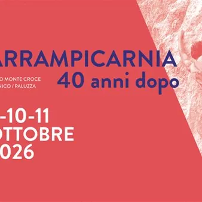

dom 11 ott
Arrampicarnia 2026
Dalle 10.00 alle 15.00 c/o Cinema Daniel, torretta di arrampicata dedicata alle scuole, dalle 18.00 alle 20.00 approccio all’arrampicata per bambini, ragazzi e principianti. Dalle 18.00 alle 20.30 aperitivo con gli ospiti, apertura chioschi e accreditamento; dalle 20.30 alle…
 Indicazioni
Indicazioni
- Costi e prenotazioni
- Costo non indicato · Prenotazione non indicata
- Programma
- Programma da verificare. Apri la fonte ufficiale per orari e possibili aggiornamenti.
- In caso di maltempo
- Nessuna indicazione specifica pubblicata.
- Note
- Acquisito automaticamente dalla fonte.
L’EVENTO
Descrizione completa
Venerdì 9
Dalle 10.00 alle 15.00 c/o Cinema Daniel, torretta di arrampicata dedicata alle scuole, dalle 18.00 alle 20.00 approccio all’arrampicata per bambini, ragazzi e principianti. Dalle 18.00 alle 20.30 aperitivo con gli ospiti, apertura chioschi e accreditamento; dalle 20.30 alle 22.00 inaugurazione mostra "40 anni di Arrampicarnia – 1986|2026". “Generazioni in dialogo. Serata culturale con i protagonisti dell’edizione del 1986 e i “big” dell’arrampicata contemporanea": non solo confronto di attrezzatura e tecniche, ma anche di motivazioni, filosofia e rapporto con la montagna, allora e oggi. Moderatore Luca Zardini; interventi di Sandro Neri, Icio dall’Omo, Rolando Larcher, Andrea Chelleris, Gabriele “Sbisi” Gorobey, Alessandro Zeni. Ingresso libero, a seguire musica e chioschi.
Sabato 10
Dalle 10.00 alle 14.00 c/o Ristorante Al Valico accreditamenti e apertura chiosco infopoint. Alle 10.00 escursione con accompagnatore di Media Montagna FVG e Accompagnatore di Media Montagna – Bergwanderführer di Kötschach-Mauthen su sentiero 401 e Museo all’Aperto Pal Piccolo. Dalle 10.30 c/o settori Scogliera e X inaugurazione nuovi itinerari e dimostrazioni di arrampicata dei big di ieri e di oggi. Arrampicata per bambini e principianti a cura delle Guide Alpine FVG presso falesia “Emmenthal” in scogliera. Iscrizioni e info presso il chiosco informativo. Alle 11.00 dimostrazioni di arrampicata e workshop di arrampicata su vie lunghe con Sean Villanueva e Nicolas Favresse. Per tutto il giorno cuccagna climbing con premi gastronomici del territorio e premi dei partner (premiazioni domenica 11 alle 17.30 presso il ristorante “Al Valico”).
Alle 17.00 c/o Chiesetta S. Nicolò AperiArrampicarnia, musica con Radio Tausia e chiosco cibo / bevande a cura della Pro Loco Paluzza. Dalle 18.00 alle 20.00 approccio all’arrampicata per bambini, ragazzi e principianti su torretta c/o Cinema Daniel; alle 20:00 mostra "40 anni di Arrampicarnia – 1986|2026" e serata con Nicolas Favresse & Seán Villanueva O’Driscoll: arrampicata, avventure e musica si intrecciano in una serata unica con due tra i più grandi interpreti dell’alpinismo contemporaneo. Immagini, storie, aneddoti e, per concludere, la loro inconfondibile firma: una jam musicale dal vivo. Ingresso libero; al termine della serata musica con Radio Tausia e chiosco con cibo / bevande presso l’ex chiesetta di San Nicolò.
Domenica 11
Dalle 10.00 alle 14.00 accreditamenti e apertura chiosco infopoint c/o Ristorante Al Valico; alle 10.00 escursione con Accompagnatore di Media Montagna FVG e Accompagnatore di Media Montagna – Bergwanderführer di Kötschach-Mauthen zona Nase. Dalle 10.30 arrampicata per bambini e principianti a cura delle Guide Alpine FVG e guide Austriache c/o scogliera Passo Monte Croce Carnico (iscrizioni e info presso il chiosco informativo); per tutto il giorno cuccagna climbing con premi gastronomici del territorio e premi dei partner.
IL PROGRAMMA
Programma e orari
Appuntamenti raccolti dalle fonti elencate. Dove manca un orario, non è ancora disponibile in questa scheda.
Programma pubblicato
- Dal 2026-10-11 al 2026-10-11
INFORMAZIONI UTILI
Prima di partire
- Controllare la fonte prima di partire.
ORGANIZZAZIONE